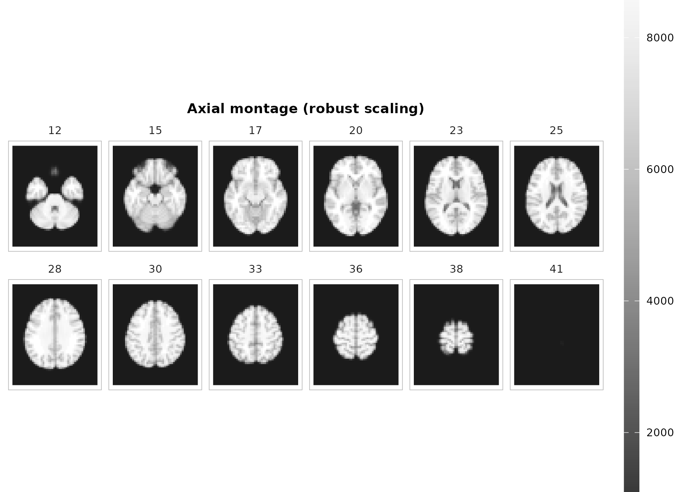
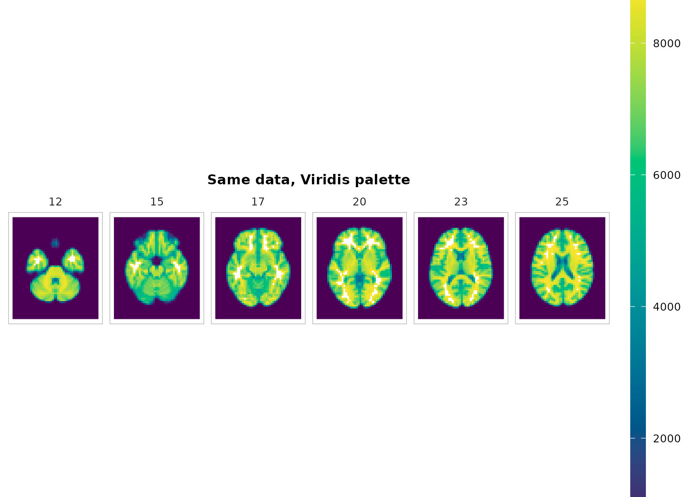

Elegant slice visualization with neuroim2
Source:vignettes/elegant-slice-visualization.Rmd
elegant-slice-visualization.RmdWhy these helpers?
Neuroimaging images are large, orientation‑sensitive rasters. The goal of these helpers is to make good defaults the shortest path: perceptually uniform palettes, robust scaling, fixed aspect ratios, and clean legends—without new heavy dependencies or any JavaScript.
This vignette shows how to:
- Build publication‑ready montages
- Create a compact orthogonal (three‑plane) view with crosshairs
- Overlay a statistical map on a structural background (threshold + alpha)
The helpers used here are:
-
resolve_cmap(),scale_fill_neuro(),theme_neuro() -
plot_montage(),plot_ortho(),plot_overlay() annotate_orientation()
Getting a demo volume
The examples below try to read a sample NIfTI included with the
package. If that is not available, they create a small synthetic 3D
volume and wrap it in NeuroVol. Either way, the rest of the
code is identical.
set.seed(1)
make_synthetic_vol <- function(dims = c(96, 96, 72), vox = c(2, 2, 2)) {
i <- array(rep(seq_len(dims[1]), times = dims[2]*dims[3]), dims)
j <- array(rep(rep(seq_len(dims[2]), each = dims[1]), times = dims[3]), dims)
k <- array(rep(seq_len(dims[3]), each = dims[1]*dims[2]), dims)
c0 <- dims / 2
g1 <- exp(-((i - c0[1])^2 + (j - c0[2])^2 + (k - c0[3])^2) / (2*(min(dims)/4)^2))
g2 <- 0.5 * exp(-((i - (c0[1] + 15))^2 + (j - (c0[2] - 10))^2 + (k - (c0[3] + 8))^2) / (2*(min(dims)/6)^2))
x <- g1 + g2 + 0.05 * array(stats::rnorm(prod(dims)), dims)
sp <- NeuroSpace(dims, spacing = vox)
NeuroVol(x, sp)
}
# Prefer an included demo file. Use a real example from inst/extdata.
demo_path <- system.file("extdata", "mni_downsampled.nii.gz", package = "neuroim2")
t1 <- if (nzchar(demo_path)) {
read_vol(demo_path)
} else {
make_synthetic_vol()
}
dims <- dim(t1)
# Build a synthetic "z-statistic" overlay matched to t1's dims
mk_blob <- function(mu, sigma = 8) {
i <- array(rep(seq_len(dims[1]), times = dims[2]*dims[3]), dims)
j <- array(rep(rep(seq_len(dims[2]), each = dims[1]), times = dims[3]), dims)
k <- array(rep(seq_len(dims[3]), each = dims[1]*dims[2]), dims)
exp(-((i - mu[1])^2 + (j - mu[2])^2 + (k - mu[3])^2) / (2*sigma^2))
}
ov_arr <- 3.5 * mk_blob(mu = round(dims * c(.60, .45, .55)), sigma = 7) -
3.2 * mk_blob(mu = round(dims * c(.35, .72, .40)), sigma = 6) +
0.3 * array(stats::rnorm(prod(dims)), dims)
overlay <- NeuroVol(ov_arr, space(t1))1) Montages that read well at a glance
The montage helper facettes a single ggplot object—so you get a shared colorbar, clean panel labels, and proper aspect ratio.
# Choose a sensible set of axial slices
zlevels <- unique(round(seq( round(dims[3]*.25), round(dims[3]*.85), length.out = 12 )))
p <- plot_montage(
t1, zlevels = zlevels, along = 3,
cmap = "grays", range = "robust", probs = c(.02, .98),
ncol = 6, title = "Axial montage (robust scaling)"
)
p + theme_neuro()
Notes
-
range = "robust"uses quantiles (default 2–98%) to ignore outliers. -
coord_fixed()+ reversed y are handled internally to preserve geometry and radiological convention. - Use
downsample = 2(or higher) when plotting huge volumes interactively.
plot_montage(
t1, zlevels = zlevels, along = 3,
cmap = "grays", range = "robust", ncol = 6, downsample = 2,
title = "Downsampled montage (for speed)"
)2) Orthogonal three‑plane view (with crosshairs)
plot_ortho() produces aligned sagittal, coronal, and
axial slices with a shared scale, optional crosshairs, and compact
orientation glyphs.
center_voxel <- round(dim(t1) / 2)
plot_ortho(
t1, coord = center_voxel, unit = "index",
cmap = "grays", range = "robust",
crosshair = TRUE, annotate = TRUE
)
Tip: If you have MNI/world coordinates, pass unit = "mm"
and a length‑3 numeric; internally it will convert using
coord_to_grid(space(vol), …) if available.
3) Overlaying an activation map on a structural background
The overlay compositor colorizes each layer independently (so each can use its own limits and palette) and stacks them as rasters. No extra packages required.
plot_overlay(
bgvol = t1, overlay = overlay,
zlevels = zlevels[seq(2, length(zlevels), by = 2)], # fewer panels for the vignette
bg_cmap = "grays", ov_cmap = "inferno",
bg_range = "robust", ov_range = "robust", probs = c(.02, .98),
ov_thresh = 2.5, # make weaker signal transparent
ov_alpha = 0.65,
ncol = 3, title = "Statistical overlay (threshold 2.5, alpha 0.65)"
)4) Palettes and aesthetics
All examples above use neuro‑friendly defaults:
- Palettes:
resolve_cmap()wraps base R’shcl.colors()with aliases like “grays”, “viridis”, “inferno”—and safe fallbacks. - Theme:
theme_neuro()keeps panels quiet and legends slim. - Legend: one shared colorbar for facetted montages via
scale_fill_neuro().
You can switch palettes easily:
plot_montage(
t1, zlevels = zlevels[1:6], along = 3,
cmap = "viridis", range = "robust", ncol = 6,
title = "Same data, Viridis palette"
)
5) Practical tips
- Choose slices with meaning. Use mm positions (if you have an affine) or meaningful indices; label strips are handled for you by the helper.
- Speed vs. fidelity. Use
downsamplefor exploration; keepdownsample = 1for final figures. - Consistent limits. For side‑by‑side comparisons, compute limits on a combined set of values (the helpers do this for orthogonal panels automatically).
Reproducibility
sessionInfo()
## R version 4.5.1 (2025-06-13)
## Platform: x86_64-pc-linux-gnu
## Running under: Ubuntu 24.04.3 LTS
##
## Matrix products: default
## BLAS: /usr/lib/x86_64-linux-gnu/openblas-pthread/libblas.so.3
## LAPACK: /usr/lib/x86_64-linux-gnu/openblas-pthread/libopenblasp-r0.3.26.so; LAPACK version 3.12.0
##
## locale:
## [1] LC_CTYPE=C.UTF-8 LC_NUMERIC=C LC_TIME=C.UTF-8
## [4] LC_COLLATE=C.UTF-8 LC_MONETARY=C.UTF-8 LC_MESSAGES=C.UTF-8
## [7] LC_PAPER=C.UTF-8 LC_NAME=C LC_ADDRESS=C
## [10] LC_TELEPHONE=C LC_MEASUREMENT=C.UTF-8 LC_IDENTIFICATION=C
##
## time zone: UTC
## tzcode source: system (glibc)
##
## attached base packages:
## [1] stats graphics grDevices utils datasets methods base
##
## other attached packages:
## [1] neuroim2_0.8.2 Matrix_1.7-3 ggplot2_4.0.0
##
## loaded via a namespace (and not attached):
## [1] generics_0.1.4 sass_0.4.10 mmap_0.6-22
## [4] stringi_1.8.7 lattice_0.22-7 digest_0.6.37
## [7] magrittr_2.0.4 bigstatsr_1.6.2 evaluate_1.0.5
## [10] grid_4.5.1 RColorBrewer_1.1-3 iterators_1.0.14
## [13] rmio_0.4.0 fastmap_1.2.0 foreach_1.5.2
## [16] doParallel_1.0.17 jsonlite_2.0.0 RNifti_1.8.0
## [19] purrr_1.1.0 deflist_0.2.0 scales_1.4.0
## [22] codetools_0.2-20 textshaping_1.0.4 jquerylib_0.1.4
## [25] cli_3.6.5 rlang_1.1.6 crayon_1.5.3
## [28] cowplot_1.2.0 splines_4.5.1 withr_3.0.2
## [31] cachem_1.1.0 yaml_2.3.10 flock_0.7
## [34] tools_4.5.1 parallel_4.5.1 memoise_2.0.1
## [37] bigassertr_0.1.7 assertthat_0.2.1 vctrs_0.6.5
## [40] R6_2.6.1 lifecycle_1.0.4 bigparallelr_0.3.2
## [43] stringr_1.5.2 dbscan_1.2.3 fs_1.6.6
## [46] ragg_1.5.0 pkgconfig_2.0.3 desc_1.4.3
## [49] pkgdown_2.1.3 RcppParallel_5.1.11-1 bslib_0.9.0
## [52] pillar_1.11.1 gtable_0.3.6 glue_1.8.0
## [55] Rcpp_1.1.0 systemfonts_1.3.1 xfun_0.53
## [58] tibble_3.3.0 knitr_1.50 farver_2.1.2
## [61] htmltools_0.5.8.1 labeling_0.4.3 RNiftyReg_2.8.4
## [64] rmarkdown_2.30 compiler_4.5.1 S7_0.2.0